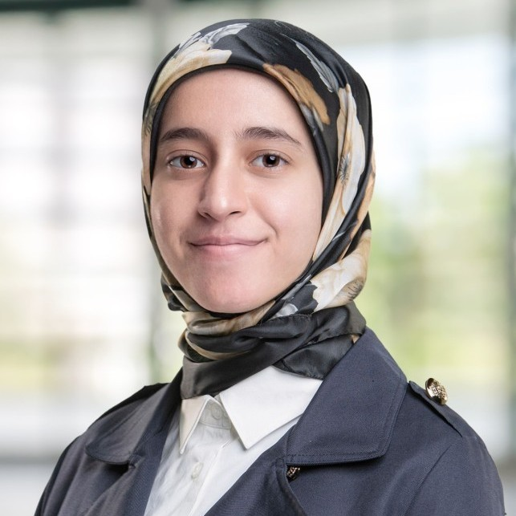

Mariam Tamer

Summary
An ambitious Computer Science graduate passionate about game development, web development, and computer graphics.
A quick learner with strong problem-solving, time-management, and collaborative skills.
Education
- Bachelor of Science, Media Engineering and Technology: Computer Science - The German University in Cairo (2018 - 2023).
- American Diploma - The International School of Elite Education (2015 - 2018)
Work Experience
Teaching Assistant - The German University in Cairo
2023 - Present
Collaborating with the Computer Science department to prepare and
deliver tutorial sessions and practical labs.
Courses taught:
- Computer Graphics
- Computer System Architecture
- Data Structures and Algorithms
Game Art Design Mentor - Vector Game Studio
2022 - 2023
Mentored and taught enthusiastic learners the basics of 2D art and how
to create characters, assets, UI, and animations in pixel art for video
games.
Achievements and Tasks:
- Working with Aseprite
- Hosting a Game Jam
- Weekly Meetings and Presentations
Associate Salesforce Developer
2022
Part-time role to customize cloud services for companies utilizing
Salesforce.
Worked with:
- Apex and SQL
- Lightning Web Components
- JavaScript, HTML, and CSS
Skills
- Problem solving: ♦ ♦ ♦ ♦ ◊
- Creative Thinking: ♦ ♦ ♦ ♦ ♦
- Time Management: ♦ ♦ ♦ ◊ ◊
Other
Hobbies
Contact Me